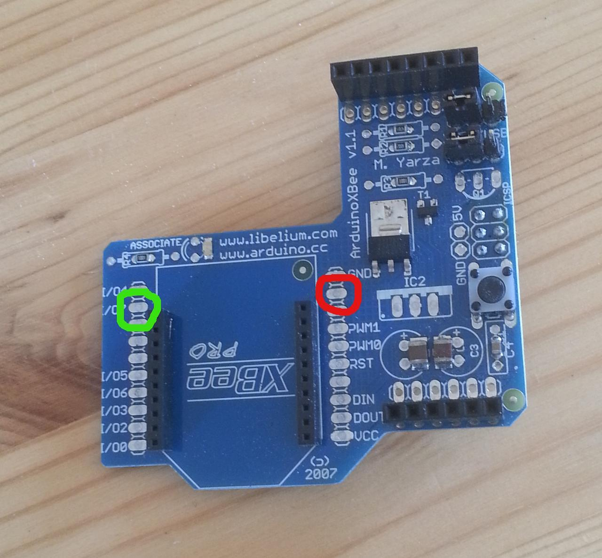
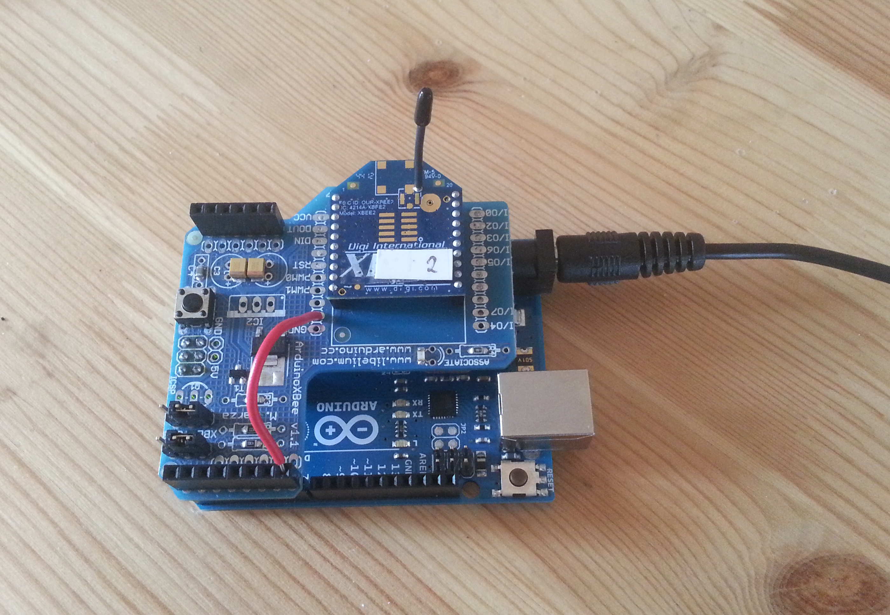

XBee sleeping
Clearly saving battery power means getting the XBee radio to sleep at the behest of the Arduino. This turns out to be fairly simple, but does require modifying the XBee shield slightly.
Our previous measurements indicate that the XBee draws about 45mA of current -- something we have to save for battery-powered nodes. Fortunately XBee radios have a hardware-controlled sleep mode, so the Arduino can sleep the radio when not in use.
Since XBees work as a mesh network, it's clearly going to be an issue as to when a radio sleeps, and for how long -- since when asleep the radio can't route packets, and so the network starts to break down. But that's a higher-level concern: for the moment, we'll focus on the mechanics of getting the XBee to sleep.

The basic mechanism is simple, and involves hardware and software. At the hardware level, the XBee uses pin 9 (shown in red right) as a control pin. This pin can be used to sleep the radio: setting it to 3,3V ("high" or "asserted") causes the radio to sleep; setting it to 0V ("low" or "deasserted") wakes the radio up. The XBee only takes account of the pin when in certain sleep modes, however: these are analogous to the Arduino's sleep modes. This is the software part: the XBee needs to be placed into the correct sleep mode, and can then be controlled from the Arduino.
Also note I/O line 7, pin 12 (in green): we'll come back to this later.
We'll deal with the hardware part first, and then the software.
Getting access to the sleep pin
The XBee shield doesn't connect the sleep pin to anything by default, so to control it we have to connect it. There are several ways we could do this, with the simplest being to solder a wire from the pan on pin 9 to an appropriate header on the shield, which is then connected to a digital pin on the Arduino. For simplicity we'll start with a wire that's long enough to reach any header: we'll actually plug it into the header for the Arduino's D7 pin.
There's a slight concern about voltage levels in this approach, as the Arduino operates at 5V while the XBee uses 3.3V. Experimentally this doesn't seem to make a difference; for a production system we'd probably want to create a resistor network to drop the voltage to that needed by the radio, to avoid any risk of damage. We'd also probably want to solder a header to XBee pin 9's pad to make it easier to connect the wiring.
Setting the sleep mode
The XBee's sleep mode is controlled by a single AT command called (unsurprisingly) SM. The default (SM 0) is for the radio to be on all the time; SM 1 selects the pin-sleep mode described above, and is the one we'll be using as it places the radio under the (hardware) control of the Arduino. (There are other sleep modes where the radio sleeps under the control of its own internal timer. Some projects use the radio's timer to wake the Arduino rather than the other way round: we prefer to keep the Arduino in control.)
Setting the sleep mode is simply a matter of issuing the appropriate AT command. However, as with a lot of things to do with hardware, we have to set things up slightly first.
The first issue concerns the setting of the XBee's sleep pin. If we select pin-sleep mode with the pin high, the XBee will sleep immediately, which might not be what we intended. So if we've connected the sleep pin to D7, we need to set things up so that the pin is low to keep the radio awake, and then select its sleep mode:
#define XBEE_SLEEP 7 // Xbee sleep pin on D7
void setup() {
...
pinMode(XBEE_SLEEP, OUTPUT); // sleep control
digitalWrite(XBEE_SLEEP, LOW); // deassert to keep radio awake when sleep mode selected
...
}
(Some early mistakes showed that -- contrary to what might be expected -- the sleep pin defaults to high (send radio to sleep) rather than low. So this step is important.)
The next issue concerns the rather intricate behaviour of the XBee's other pins when sleeping. When the radio enters sleep mode, it asserts its I/O 7 line (pin 12) so that external devices know that it's asleep. This could be used to make sure that external peripherals wake up only when the radio is active, but for some reason the XBee shield's designers have connected this pin to the Arduino's reset line, which means that sleeping the radio will reset (and in fact freeze) the Arduino. Some posts suggest that solving this requires cutting lines on the shield, which might have been true for earlier shields but now isn't: we simply need to disable the output of this pin, using another AT command:
atCommand("D7", 0);
This disables the XBee's D7 line (not to be confused with the Arduino's D7 line, which we've attached to the XBee's sleep pin), which is enough to stop the Arduino freezing. on sleep. (Yes, this did take quite a while to work out, since you ask...)
We can now put all this together to place the XBee into SM 1 and let the Arduino sleep it at will:
#define LED 13
#define XBEE_SLEEP 7 // XBee sleep pin on D7
void setup() {
pinMode(LED, OUTPUT); // LED signal
pinMode(XBEE_SLEEP, OUTPUT); // sleep control
Serial.begin(9600);
radio.setSerial(Serial);
digitalWrite(XBEE_SLEEP, LOW); // deassert to keep radio awake when sleep mode selected
if(atCommand("D7", 1) | atCommand("SM", 1)) {
// AT commands failed, flash frantically
...
}
...
}
Note that we've used local AT commands to set the radio's mode. It's also possible to do this statically using X-CTU.
Results

The results of all this hacking are that the Arduino can put the XBee into sleep mode whenever it wants to simply by asserting D7. The voltages on pins are maintained even when the Arduino itself sleeps, so it can put the radio to sleep and then sleep itself, wake up and wake up the radio.
Measuring current shows that the sleeping Arduino and XBee draw abour 35mA, the same as an Arduino alone. This makes sense, as the XBee datasheet suggests that when sleeping it draws current in the microamp range -- far too small for a normal ammeter to measure, and dwarfed by the quiescent current of the Arduino board (which still needs some work).
Waking the radio happens quickly when the sleep pin is deasserted, but it seems to take some time to re-connect to the mesh co-ordinator: around 7s, in fact, which is a little strange and needs some more exploration.